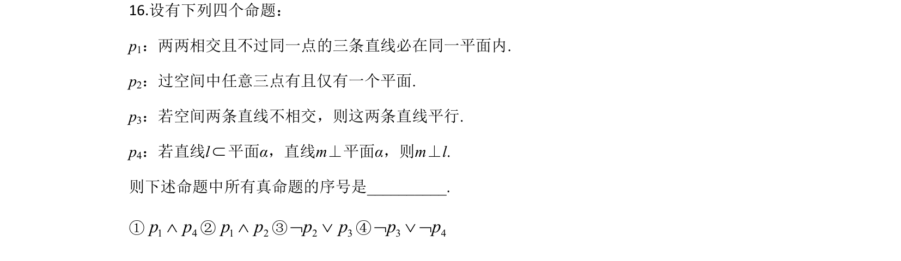
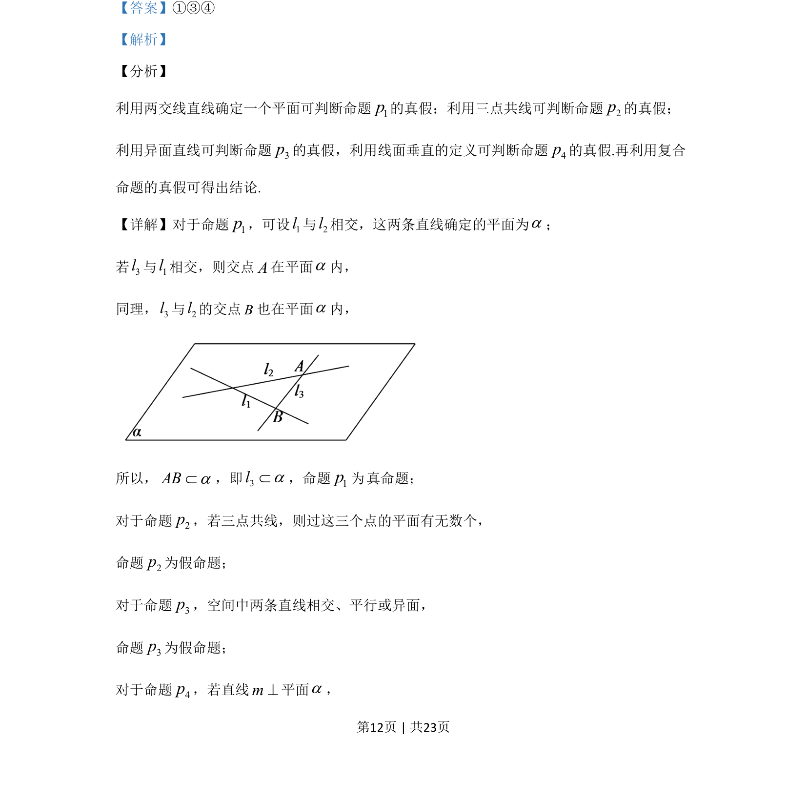
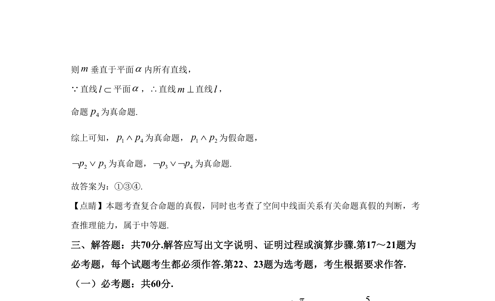

考点：空间线面关系 命题真假判断 复合命题

考查空间中线面位置关系命题的真假判断及复合命题真假判定。


📄 原 PDF 第 12 页：
素材/真题/吉林/2008-2024·（吉林）数学高考真题/2020年高考数学试卷（文）（新课标Ⅱ）（解析卷）.pdf
16.设有下列四个命题： p1：两两相交且不过同一点的三条直线必在同一平面内. p2：过空间中任意三点有且仅有一个平面. p3：若空间两条直线不相交，则这两条直线平行. p4：若直线lÌ平面α，直线m⊥平面α，则m⊥l. 则下述命题中所有真命题的序号是____. ①1 4p pÙ②1 2p pÙ③2 3p pØ Ú④3 4p pØ Ú Ø
【答案】①③④ 【解析】 【分析】 利用两交线直线确定一个平面可判断命题1p的真假；利用三点共线可判断命题2p的真假； 利用异面直线可判断命题3p的真假，利用线面垂直的定义可判断命题4p的真假.再利用复合 命题的真假可得出结论. 【详解】对于命题1p，可设1l与2l相交，这两条直线确定的平面为a； 若3l与1l相交，则交点A在平面a内， 同理，3l与2l的交点B也在平面a内， 所以，ABaÌ，即3laÌ，命题1p真命题； 对于命题2p，若三点共线，则过这三个点的平面有无数个， 命题2p为假命题； 对于命题3p，空间中两条直线相交、平行或异面， 命题3p为假命题； 对于命题4p，若直线m^平面a， 为